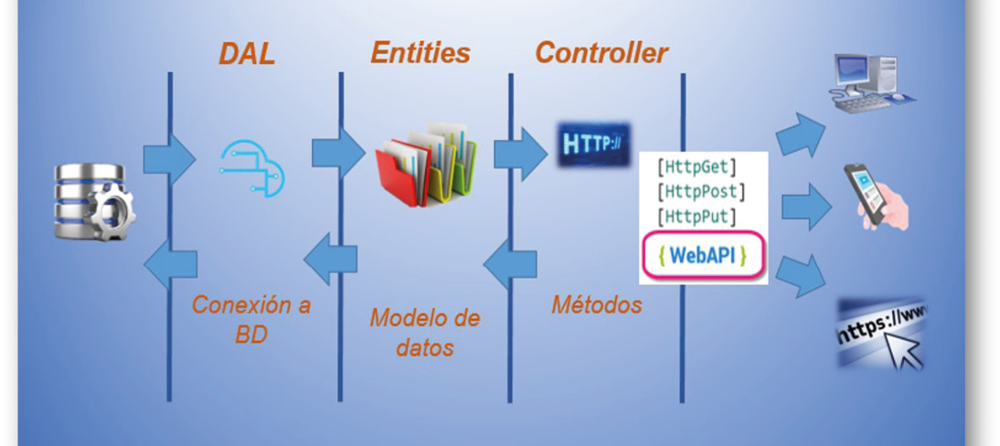
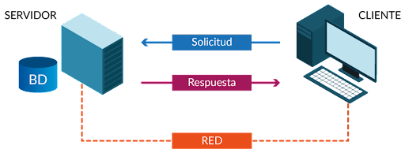

El equipo de investigación de ESET ha descubierto una variante para Linux del backdoor SideWalk, uno de los múltiples implantes personalizados que utiliza el grupo de APT SparklingGoblin. Esta variante se utilizó en un ataque contra una universidad de Hong Kong en febrero de 2021, la misma universidad que ya había sido atacada por SparklingGoblin durante las protestas estudiantiles de mayo de 2020. Originalmente llamamos a este backdoor StageClient, pero ahora nos referimos a el como SideWalk Linux. También descubrimos que un backdoor para Linux previamente conocido, Spectre RAT, documentado por primera vez por 360 Netlab, también es una variante de SideWalk Linux, ya que presenta múltiples puntos en común con las muestras que identificamos.
Esta publicación documenta SideWalk Linux, su victimología y sus numerosas similitudes con el backdoor SideWalk originalmente descubierto.
Atribución
El backdoor SideWalk es exclusivo del grupo de APT SparklingGoblin. Además de las múltiples similitudes de código entre las variantes para Linux de SideWalk y varias herramientas de SparklingGoblin, una de las muestras de SideWalk Linux usa una dirección C&C (66.42.103[.]222) que el grupo utilizó anteriormente.
Teniendo en cuenta todos estos factores, atribuimos con gran confianza SideWalk Linux al grupo de APT SparklingGoblin.
Victimología
Si bien en VirusTotal hay varias muestras de SideWalk Linux, tal como las conocemos ahora, en nuestra telemetría hemos encontrado solo una víctima comprometida con esta variante de SideWalk: una universidad de Hong Kong que, en medio de protestas estudiantiles, había sido atacada previamente por SparklingGoblin (usando el loader Motnug y el backdoor CROSSWALK) y Fishmonger (usando los backdoor ShadowPad y Spyder). Tenga en cuenta que en ese momento pusimos esa actividad bajo la denominación más amplia de Winnti Group.
El camino hacia Sidewalk Linux
SideWalk, un backdoor que describimos por primera en su versión para Windows en agosto de 2021, es una herramienta multipropósito que permite cargar módulos adicionales enviados desde el servidor de C&C. Hace uso de Google Docs como dead-drop resolver, y de Cloudflare como su servidor de C&C. Es capaz de manejar adecuadamente la comunicación detrás de un proxy.
Actualmente se desconoce la cadena de compromiso, pero creemos que el vector de ataque inicial podría haber sido la explotación de una vulnerabilidad. Esta hipótesis se basa en el artículo de 360 Netlab que describe la botnet Spectre apuntando a cámaras IP y dispositivos NVR y DVR, y el hecho de que la víctima de Hong Kong usó un servidor de WordPress vulnerable, ya que hubo muchos intentos de instalar varios webshells.
Documentamos por primera vez la variante para Linux de SideWalk como StageClient el 2 de julio de 2021 , sin establecer la conexión en ese momento con SparklingGoblin y su backdoor personalizado SideWalk. El nombre original se utilizó debido a las repetidas apariciones de la string StageClient en el código.
Mientras investigamos más a fondo StageClient, nos encontramos con una publicación de 360 Netlab sobre la botnet Spectre. Esa publicación describe un backdoor modular para Linux con una configuración flexible que utiliza una variante del algoritmo de cifrado ChaCha20, básicamente un subconjunto de la funcionalidad de StageClient. Una inspección posterior confirmó esta hipótesis; además, encontramos una gran superposición en la funcionalidad, la infraestructura y los símbolos presentes en todos los binarios.
Comparamos la muestra de StageClient
E5E6E100876E652189E7D25FFCF06DE959093433 con las muestras de Spectre 7DF0BE2774B17F672B96860D013A933E97862E6C y encontramos numerosas similitudes, algunas de las cuales enumeramos a continuación.
Primero, hay una superposición en los comandos de C&C. Segundo, las muestras tienen la misma estructura de configuración y método de cifrado,
Además, los módulos de las muestras son administrados casi de la misma manera y la mayoría de las interfaces son idénticas; los módulos de StageClient solo necesitan implementar un handler adicional, que es para cerrar el módulo. Tres de los cinco módulos conocidos son casi idénticos.
Por último, pudimos ver sorprendentes superposiciones en los protocolos de red de las muestras comparadas. Una variante de ChaCha20 es utilizada dos veces para el cifrado con compresión LZ4 de la misma manera. Tanto StageClient como Spectre crean varios hilos (consulte la Figura 3 y la Figura 4) para administrar el envío y la recepción de mensajes asincrónicos junto con los latidos del corazón.
A pesar de todas estas sorprendentes similitudes, hay varios cambios. Los más destacables son los siguientes:
- Los autores cambiaron del lenguaje C a C++. Se desconoce el motivo, pero debería ser más fácil implementar una arquitectura modular de este tipo en C++ debido a su compatibilidad con polimorfismos.
-
Se agregó una opción para intercambiar mensajes a través de HTTP (consulte la Figura 5 y la Figura 6).
-
Los plugins descargables fueron reemplazados por módulos precompilados que cumplen el mismo propósito; se agregaron varios comandos nuevos y dos módulos nuevos.
Se agregó el módulo TaskSchedulerMod, que funciona como una utilidad cron integrada. Su tabla cron se almacena en la memoria; los trabajos se reciben a través de la red y se ejecutan como comandos de shell.
Se agregó el módulo SysInfoMgr, que proporciona información sobre el sistema subyacente, como la lista de paquetes instalados y detalles del hardware.
Arquitectura de software
Una particularidad de SideWalk es el uso de múltiples subprocesos para ejecutar una tarea específica. Notamos que en ambas variantes hay exactamente cinco hilos ejecutados simultáneamente, cada uno de ellos con una tarea específica.

- StageClient::ThreadNetworkReverse
Si aún no se ha establecido una conexión con el servidor de C&C, este subproceso intenta recuperar periódicamente la configuración del proxy local y la ubicación del servidor de C&C del dead-drop resolver. Si el paso anterior fue exitoso, intenta iniciar una
conexión con el servidor C&C.
- Si el backdoor no recibe un comando en la cantidad de tiempo especificada, este hilo puede terminar la conexión con el servidor C&C o cambiar a un modo de “suspensión” que introduce cambios menores en el comportamiento.
-
StageClient::ThreadPollingDriven
Si no hay otros datos en cola para enviar, este subproceso envía periódicamente un comando de latido al servidor C&C que además puede contener la hora actual.
StageClient::ThreadBizMsgSend.
- Este hilo comprueba periódicamente si hay datos para enviar en las cola de mensajes utilizada por todos los demás hilos y, si es así, los procesa.
-
StageClient::ThreadBizMsgHandler
Este hilo comprueba periódicamente si hay mensajes pendientes recibidos del servidor de C&C y, en caso afirmativo, los gestiona.
Suma de verificación
Primero, antes de descifrar, se verifica la integridad de los datos. Esta verificación es similar en ambas implementaciones de SideWalk se computa un hash MD5 en el nonce de ChaCha20 concatenado con los datos de configuración cifrados. Este hash luego se compara con un valor predefinido y, si no es igual, SideWalk sale.
Protocolo de comunicación
Serialización de datos
El protocolo de comunicación entre la máquina infectada y el C&C es HTTP o HTTPS, según la configuración, pero en ambos casos los datos se serializan de la misma manera. No solo la implementación es muy similar, sino que se usa la misma clave de cifrado en ambas implementaciones, lo que acentúa la similitud entre las dos variantes.
Otro punto interesante es que la variante para Windows se ejecuta como shellcode totalmente independiente de la posición, mientras que la variante de Linux es una biblioteca compartida. Sin embargo, creemos que los autores del malware podrían haber dado un paso más, usando una herramienta como sRDI para convertir un PE compilado de SideWalk en shellcode en lugar de escribirlo manualmente.
Comandos
Solo cuatro comandos no se implementan o se implementan de manera diferente en la variante para Linux, como se muestra en la Tabla 1. Todos los demás comandos están presentes, incluso con las mismas ID.
| Command ID (from C&C) |
Windows variants |
Linux variants |
| 0x7C |
Load a plugin sent by the C&C server. |
Write the received data to the file located at %AllUsersProfile%\UTXP\nat\, |
| 0x82 |
Collect domain information about running processes, and owners (owner SID, account name, process name, domain information). |
Do nothing. |
| 0x8C |
Data serialization function. |
Commands that are not handled, but fall in the default case, which is broadcasting a message to all the loaded module |
| 0x8E |
Write the received data to the file located at %AllUsersProfile%\UTXP\nat\,returned by VirtualAlloc at each execution of the malware |
|
Plugins
En las variantes de SideWalk Linux los módulos están integrados; no se pueden obtener desde el servidor de C&C. Esa es una diferencia notable de la variante de Windows. Algunas de esas funcionalidades integradas, como la recopilación de información del sistema (SysInfoMgr, por ejemplo), como la configuración de la red, se realizan directamente mediante funciones dedicadas en la variante de Windows. En la variante de Windows, se pueden agregar algunos plugins a través de la comunicación con el C&C.

Evasión de defensa
La variante para Windows de SideWalk hace todo lo posible para ocultar el objetivo de su código. Recortó todos los datos y códigos que no eran necesarios para su ejecución y cifró el resto. Por otro lado, las variantes para Linux contienen símbolos y dejan algunas claves de autenticación únicas y otros artefactos sin cifrar, lo que facilita significativamente la detección y el análisis.
Conclusión
El backdoor que se usó para atacar una universidad de Hong Kong en febrero de 2021 es de la misma familia que el backdoor SideWalk y, en realidad, es una variante para Linux del backdoor. Esta versión para Linux exhibe varias similitudes con su contraparte para Windows junto con varias novedades
Fuentes.
https://www.edapp.com/blog/es/12-cursos-gratuitos-de-ciberseguridad/
https://www.udemy.com/es/topic/web-security/
https://edu.gcfglobal.org/es/seguridad-en-internet/